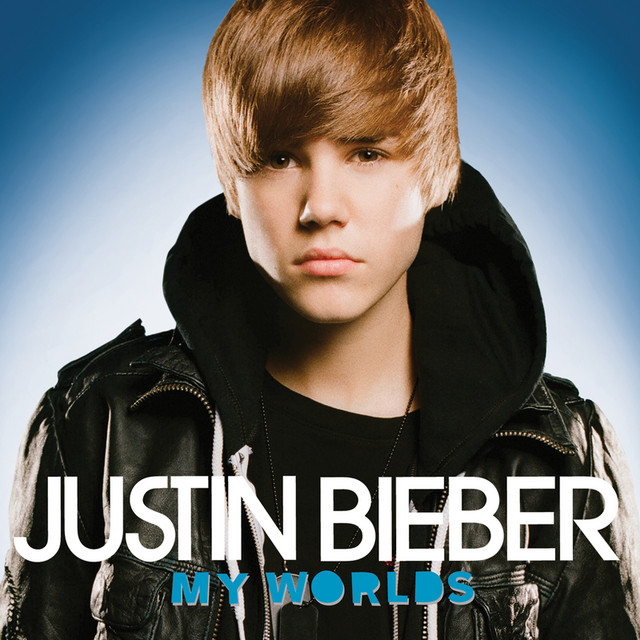

Oh, whoa
Oh, whoa
Oh, whoa
You know you love me (yo), I know you care (uh-huh)
Just shout whenever (yo), and I'll be there (uh-huh)
You are my love (yo), you are my heart (uh-huh)
And we will never, ever, ever be apart (yo, uh-huh)
Are we an item? (Yo) girl, quit playin' (uh-huh)
"We're just friends" (yo), what are you sayin'? (Uh-huh)
Said, "There's another" (yo), and looked right in my eyes (uh-huh)
My first love broke my heart for the first time (yo), and I was like (uh-huh)
Baby, baby, baby, oh
Like baby, baby, baby, no
Like baby, baby, baby, oh
I thought you'd always be mine, mine
Baby, baby, baby, oh
Like baby, baby, baby, no
Like baby, baby, baby, oh
I thought you'd always be mine, mine
Oh, for you, I would've done whatever (uh-huh)
And I just can't believe we ain't together (yo, uh-huh)
And I wanna play it cool (yo), but I'm losin' you (uh-huh)
I'll buy you anything (yo), I'll buy you any ring (uh-huh)
And I'm in pieces (yo), baby, fix me (uh-huh)
And just shake me 'til you wake me from this bad dream (yo, uh-huh)
I'm goin' down (yo), down, down, down (uh-huh)
And I just can't believe my first love won't be around, and I'm like
Baby, baby, baby, oh
Like baby, baby, baby, no
Like baby, baby, baby, oh
I thought you'd always be mine, mine
placeholder
Baby, baby, baby, oh
Like baby, baby, baby, no
Like baby, baby, baby, oh
I thought you'd always be mine, mine
You can give all of your love
But sometimes it won't be enough
Nobody told me this day would come
Now I'm all gone
You can give all of your love
But sometimes it just ain't enough
Never told me this day would come
Now I'm all gone
Baby, baby, baby, oh
Like baby, baby, baby, no
Like baby, baby, baby, oh
I thought you'd always be mine, mine
Baby, baby, baby, oh
Like baby, baby, baby, no
Like baby, baby, baby, oh
I thought you'd always be mine, mine
I'm gone (yeah-yeah-yeah, yeah-yeah-yeah)
Now I'm all gone (yeah-yeah-yeah, yeah-yeah-yeah)
Now I'm all gone (yeah-yeah-yeah, yeah-yeah-yeah)
Now I'm all gone (gone, gone, gone, gone), I'm gone